ADA
Trump's tweets
Twitter plays a crucial role in politics these days. Gone are the days of door-to-door campaigning and trying to reach the last man. Today, power is weilded by those who can tweet. A carefully worded 140 character phrase carries the ability to swing states and potentially change the course of an entire nation. The goal of our project is to analyse the impact of Twitter on society and understand how ideas are spread across a network.
In order to investigate this question, our proposal is to analyse the tweets posted by Trump on Twitter over time to discover what was the main focus of his campaign, how it changed and how the society reacts to his discourses and proposals.
The Trump Twitter Archive is a project that has been collecting Trump's tweets since 2009 but the main focus of this project will be the period of his campaign.
Data Overview
Twitter API provides information about tweets in JSON formart and in order to see which field means it is possible consult the twitter's documentation available here. In this analysis the main fields that will be used are { text, created_at, source, retweet_count, favorite_count}. The fields { coordinates, place } weren't used due to the high level of missingness.
The number of tweets aggregated by month is given in the chart below. It can be noticed that the year of 2017 have less tweets, probably this is due the dataset of 2017 is not closed yet and will be changed. [SHOULD WE REMOVE 2017 FROM THIS CHART ????]
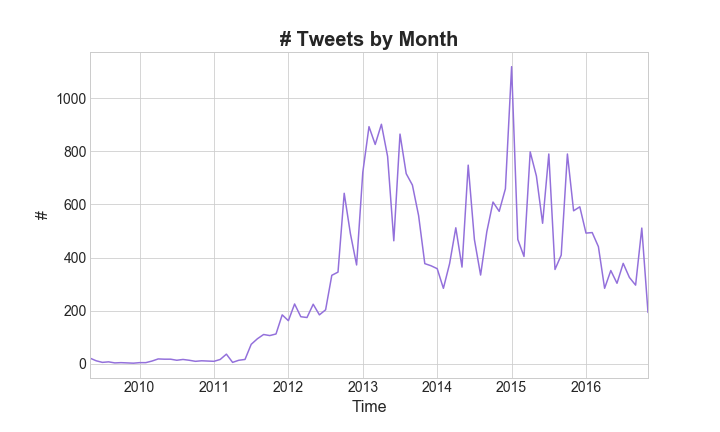Trump also tweets from different sources or devices and there is evidence that the style of tweet is different by device, the analysis about it can be found in this blog post. The volume of tweets over time can be seen in the chart below.
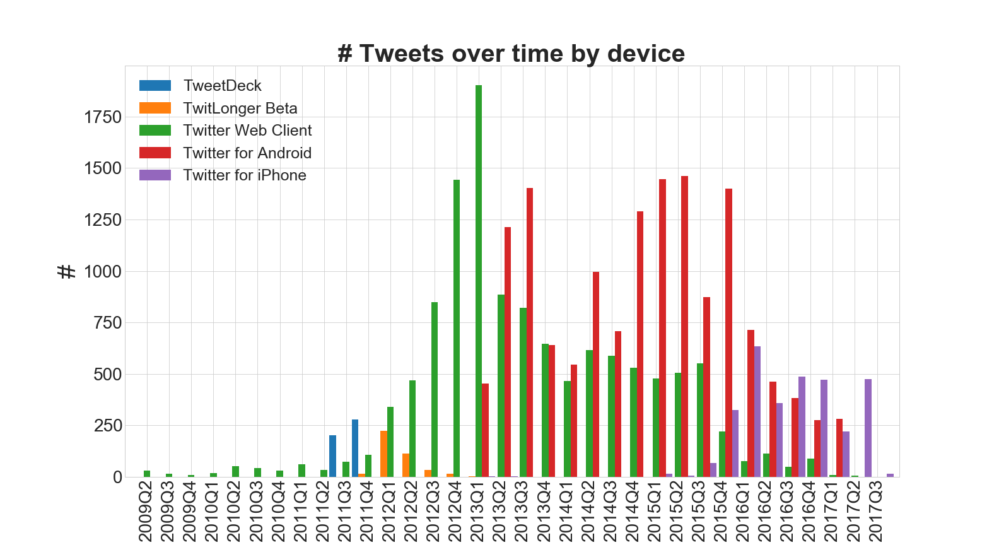Nowadays the tweet's source are mainly iPhone and Android and David Robinson's analysis infers that Trump should be using Android and his team iPhone.
[TALK ABOUT DAY OF WEEK] 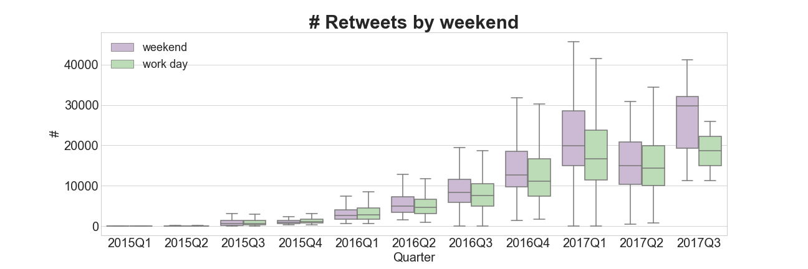 > Correlation spearman correlation between number retweets and favorite is 0.87.Another hypothesis is if the subject / topics of his tweets change over time and the simplest thing that can be done to have a feeling about which topics appears over time is a word cloud. The image below shows the words that more appeared by quarter
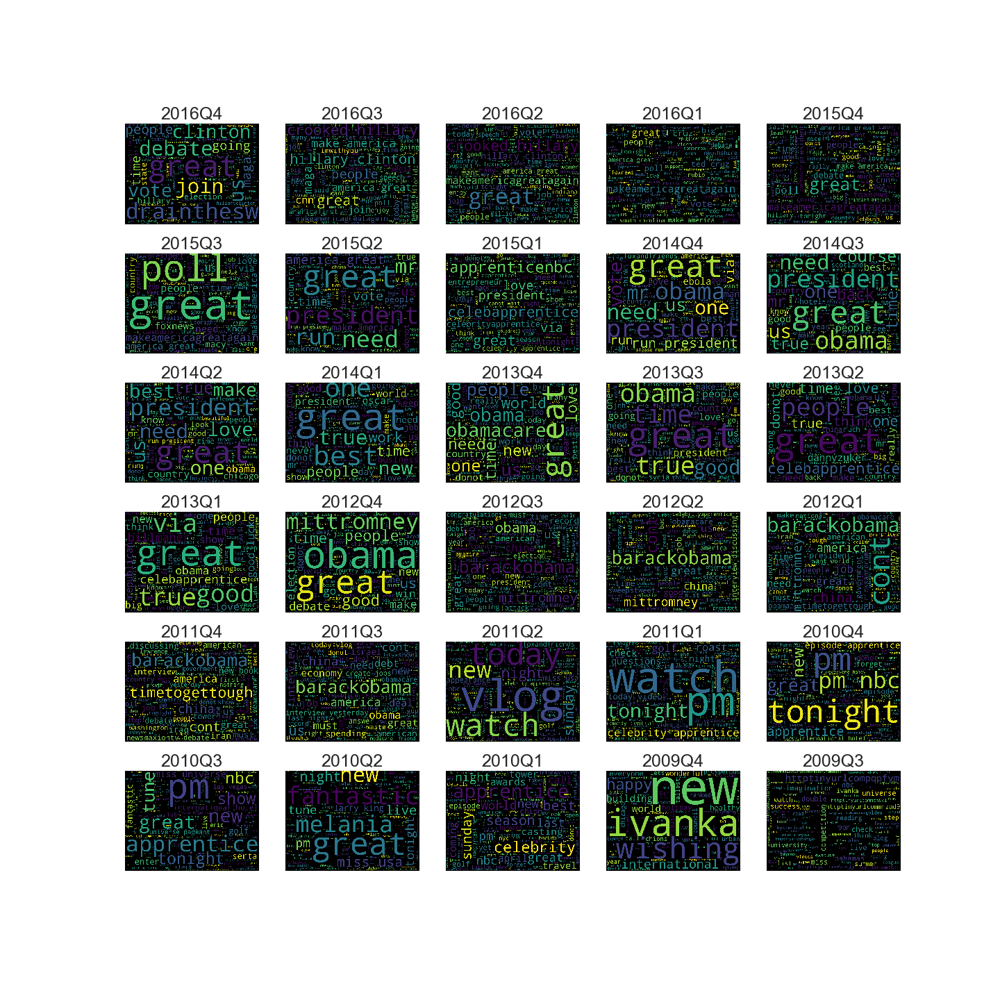Before to plot word cloud it was removed stop words based on the nltk library, urls / links, mentions to himself (there were a lot of those). [THE SIZE OF THIS CHART IS WEIRD] [COMMENT THE WORDS BY QUARTER]
Writing Style
The manner of expressing thoughts is characteristic of a person that can change over time and also with the available resources to pass the message. Some example that might influenciate this behavior are: it is easier take longer sentences when you tweet from a computer instead of your cellphone, twitter's box is limited to 140 characters, depending on the historical moment more verbs are used instead of adjectives.
The chart below shows over time the average of number of standards to express opinions / sentiments such as { !, #, ?, url, emojis } over time.
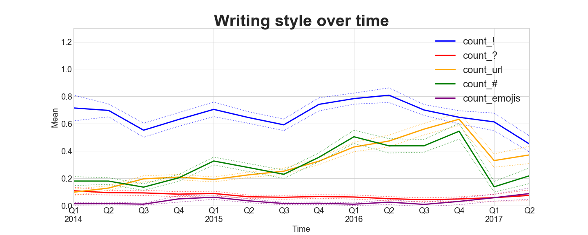 [PUT ANALYSIS]The same analysis over time was done with the amount of verbs, adjectives and adverbs extracted from the module pos_tag from nltk library but the proportions are constant over time.
Sentimental Analysis
Humans are "generally" sentimental and emotional beings. Analysing the sentiment of someone's tweets' could tell us a great deal about the general thought process of the person. Here, we will present an in-depth analysis of the sentiments expressed by Trump on Twitter.
Let us look at the distribution of the number of tweets classified based on the sentiments expressed in them. The raw sentiment scores lie between -1 and 1, with -1 denoting the most negative sentiment and vice versa.
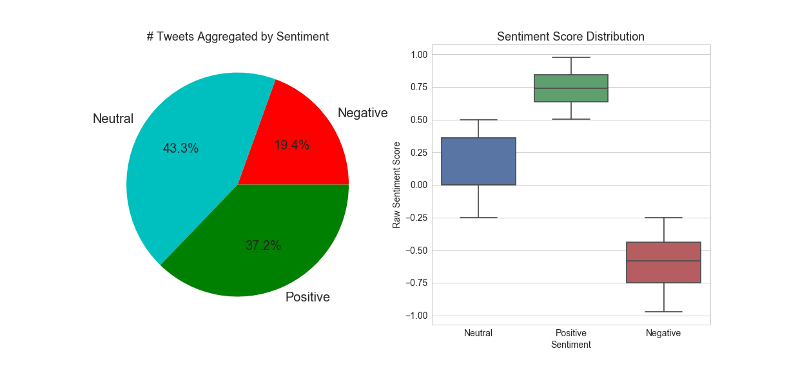Although majority (~43%) of tweets have been classified as neutral, a significant (~20%) are negative. Let us look at some of these tweets :
The FAKE & FRAUDULENT NEWS MEDIA is working hard to convince Republicans and others I should not use social media - but remember, I won....
— Donald J. Trump (@realDonaldTrump) July 1, 2017
Watched low rated @Morning_Joe for first time in long time. FAKE NEWS. He called me to stop a National Enquirer article. I said no! Bad show
— Donald J. Trump (@realDonaldTrump) June 30, 2017
Just finished a very good meeting with the President of South Korea. Many subjects discussed including North Korea and new trade deal!
— Donald J. Trump (@realDonaldTrump) June 30, 2017
Our new American Energy Policy will unlock MILLIONS of jobs & TRILLIONS in wealth. We are on the cusp of a true energy REVOLUTION. pic.twitter.com/Up9WkJnYgw
— Donald J. Trump (@realDonaldTrump) June 29, 2017
It would also be interesting to see the temporal pattern in the distribution of the number of tweets based on the sentiment expressed in them.
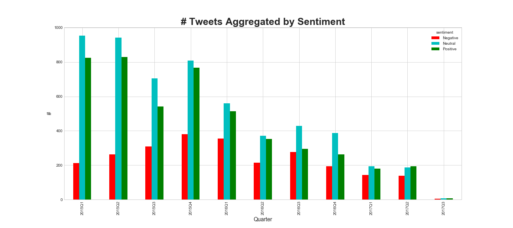While the number of tweets by Trump has decreased in general, the proportion of negative tweets has gone up, and more so, after he was elected as the president. Let us now look at how these tweets were perceived by the public. We will use the total number of retweets and likes (favorited) as a metric.
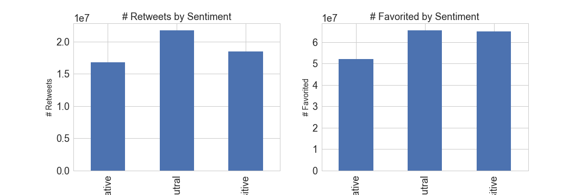
It is interesting to note that while the total number of negative tweets is only about ~20% in total, the number of retweets and favorited/likes are almost similar across the three categories of sentiments. This could be indicative of the fact that people are more gullible and supportive towards negative tweets by Trump.
Source Analysis
It is a well known fact that Trump's official Twitter handle @realDonaldTrump is also accessible by his media and other supporting teams. Trump has been personally known to use an "Android" phone while his team either uses the Twitter Web Client or an iPhone. Since the Twitter API allows us to differentiate between the "source" of a tweet, it would be interesting to see if there are any differentiating patterns based on the source.
Trump and his team have clearly used numerous devices/sources for connecting with the world on Twitter. Here is a comprehensive list ordered according to total number of tweets originating from them : 'Twitter for Android', 'Twitter Web Client', 'Twitter for iPhone', 'TweetDeck', 'TwitLonger Beta', 'Instagram', 'Facebook', 'Twitter for BlackBerry', 'Twitter Ads', 'Mobile Web (M5)', 'Twitlonger', 'Twitter for iPad', 'Media Studio', 'Twitter QandA', 'Vine - Make a Scene', 'Periscope', 'Neatly For BlackBerry 10', 'Twitter Mirror for iPad', 'Twitter for Websites'.
Let us take a look at the active-ness of these different sources which can be quantified by the number of tweets in a given time period.
"Twitter for Android" has been relatively the most active source from Q2 2013 to Q2 2016. Note that, Trump's presidential campaign officially started in Q2 2015 and he won the election in Q4 2016.
Since we are aware that Trump personally uses Android for tweeting, it would be interesting to analyse the statistics of sentiments in tweets based on the source.
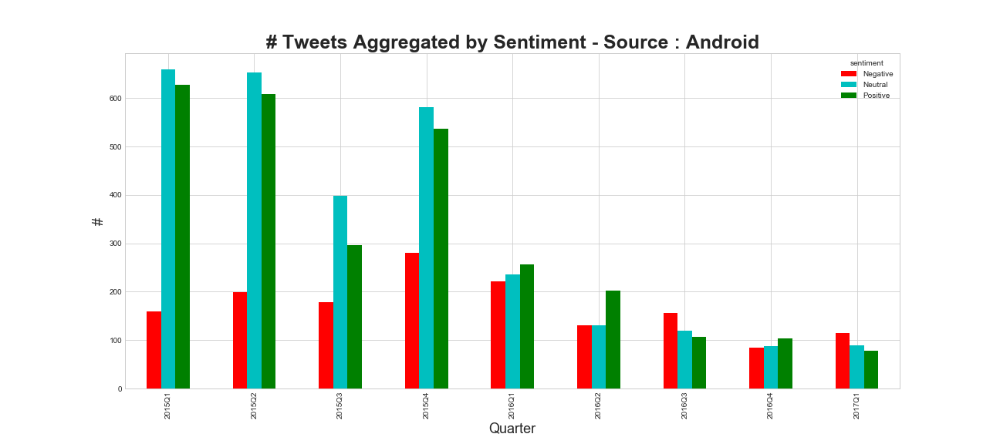 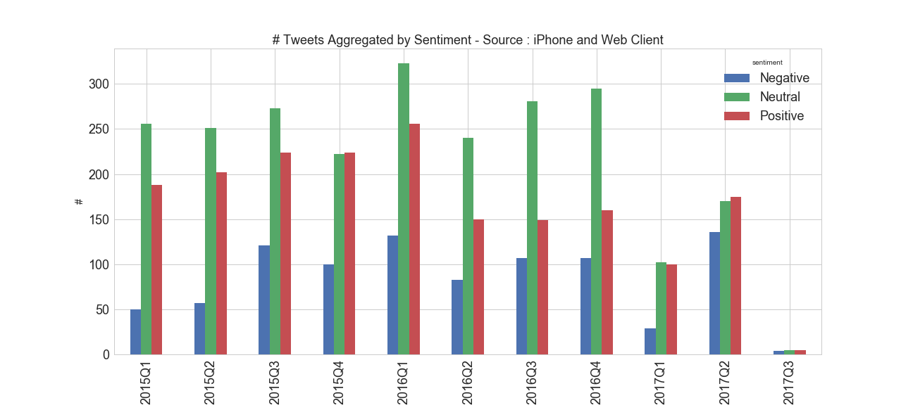It is not surprising that compared sources other than itself, tweets from Android has greater proportion of negative tweets.
Ego Analysis
- Recovering tweets with ‘I’, ‘Me’, ‘My’, ‘RealDonaldTrump’ etc. (fix this list)
- Topic Modelling for each category
- Qualitative Textual Description
Topic Modelling
Trump has had many phases in his life, ranging from being a judge at a reality T.V. show, to being the President of the United States of America. We thought, it would be an interesting exercise to figure out what were the major thematic elements in his tweets through the years. Given his vastly different backgrounds throughout the years, we hoped to find significant differences in the theme of his tweets. And we weren't surprised. The technique used for topic modelling is Latent Dirichlet Allocation (LDA). Others like Non-Negative Matrix Factorization (NMF) and Hierarchical Dirichlet Process (HDP), but LDA's perofrmance yielded the most coherent results.
LDA outputs most significant 'n' words for 'm' topics each. Both parameters are chosen by the user. Initially, we took all the tweets for creating the input courpus for LDA. The resulting output was missing some major tweet elements that Trump is known for. For example, 'Hillary Clinton', 'Immigration' were entirely missing!
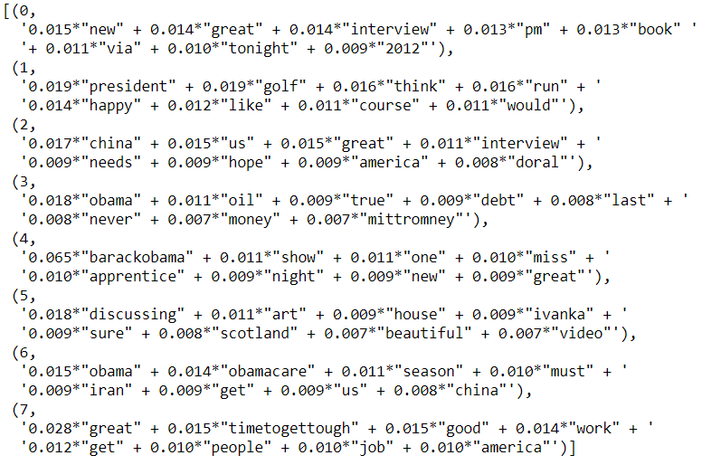We thought it might be because of the huge time range that we have chosen. We narrowed down next to last three months before the election, when competition between Hillary and Trump as at its peak. And voila! The infamous Crooked Hillary, BigLeagueTruth and MAGA make their appearance.

Better visualization technique for the entire corpus is to divide them into quarters for each year, and then have a look at the word-cloud for topic models. We will be visualizing both the word-cloud and the corresponding news stories from that period of time. Google News was used for the purpose of finding relevant news stories.
Topic Word-Cloud :
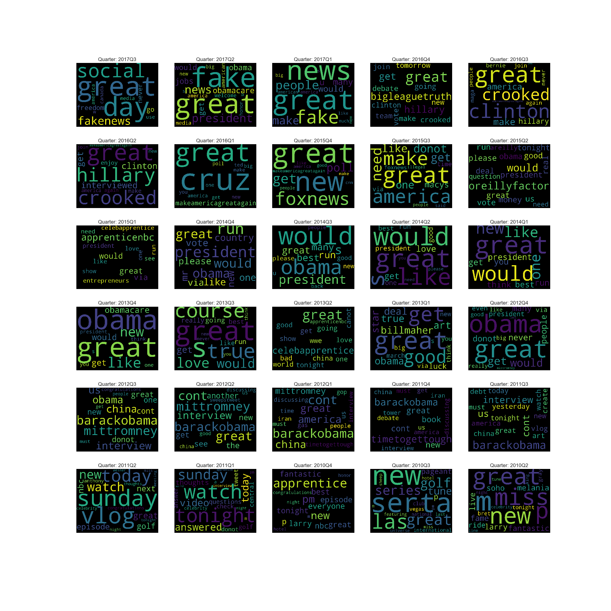After having a look at the word-cloud above, let's validate the results by looking at few news stories from those quarters :

Timing
Trump - The Night Owl
Being an early riser has always been associated as a quality of success. While, yes, the early birds do catch some worms, night owls have perks of their own.
Trump, by his own admission , is a restless sleeper. But instead of twisting and turning in his bed to find just the right posture to sleep, he's more likely to indulge in some binge tweeting.
Using the twitter archive, we have plotted some interesting results on his late-night rendezvous. First up, we have plotted the frequency of his late night tweeting, late-night being defined as the time between 0000 to 0359 hours. As is clearly visible the graph below, the he has been a consistent late-night tweeter since early 2014, where he either bragged about 'Celebrity Apprentice' or questioned Obama's tax reforms. Upon announcing his candidacy, he has been more involved in making incendiary remarks about his rivals in his late-night goofups.
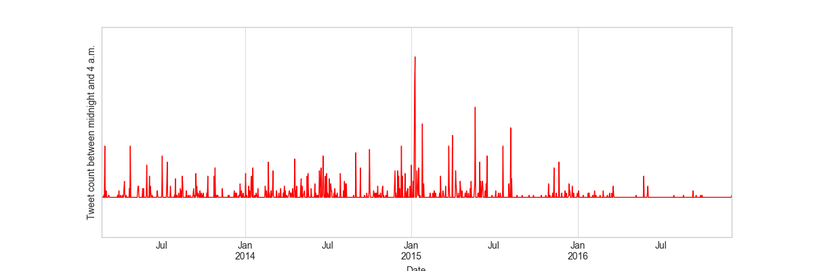Another interesting visualization informs us about his diminishing early-morning posts. As compared to 2014 and 2015, 2016 was the year, where Trump decided to take it slow, making far less tweets past the 3:00 A.M. mark. Maybe the presidential campaigns grueling schedule tempered his infamous insomnia. The heatmap below shows tweet-timings for various days of the year, from midnight to 3:59 A.M.
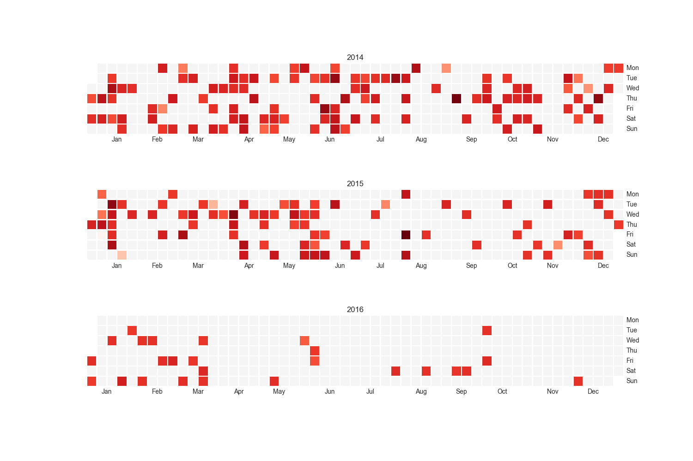And finally, a bit of thematic analysis on the tweet data, filtered down based on late-night time slot and Android device. The resulting word-cloud provides much more interesting insights on the kind of topics he preferred indulging late at night, revealing previously hidden 'top-words' like the infamous spat with Megyn Kelly, Sean Hannity, FoxNews etc. This resulting topic word cloud provides better insights mainly because we are narrowing down our timeframe (i.e. midnight, the time where Trump prefers to talk about topics he cares the most) and device (i.e. Android, from which Trump personally tweets).
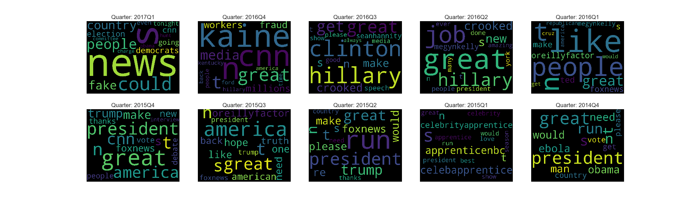- Include charts in the exploratory analysis for day of week, etc.
- Charts - Quarter Cloud
- Qualitative Textual Description
Bonus/Impact/Sensational (just a placeholder, need to put somewhere else)
Most retweeted tweet :#FraudNewsCNN #FNN pic.twitter.com/WYUnHjjUjg
— Donald J. Trump (@realDonaldTrump) July 2, 2017
Such a beautiful and important evening! The forgotten man and woman will never be forgotten again. We will all come together as never before
— Donald J. Trump (@realDonaldTrump) November 9, 2016